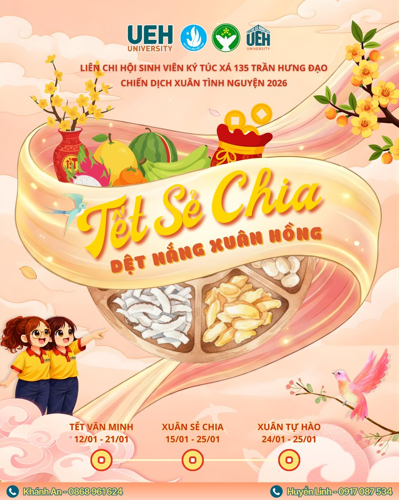

Xuân Tình Nguyện
Mô tả
Xuân Tình Nguyện là chiến dịch thường niên của Đại học Kinh tế TP. Hồ Chí Minh (UEH), nhằm lan tỏa tinh thần sẻ chia và mang không khí Tết đến với mọi người. Tại KTX 135 Trần Hưng Đạo, chương trình được tổ chức với nhiều hoạt động ý nghĩa như trang trí Góc xuân, cuộc thi Gói bánh chưng, Đêm hội “Sum Sắc” và trao quà Tết cho các em nhỏ tại Lớp học tình thương.
Ý nghĩa
Đây là dịp để sinh viên nội trú cùng nhau tạo nên một không khí Tết ấm áp, đoàn viên ngay tại KTX trước khi về quê đón Tết, đồng thời lan tỏa tinh thần “tương thân tương ái” của UEH đến cộng đồng.
Giá trị mang lại
- Giúp sinh viên gắn kết qua các hoạt động chung trước kỳ nghỉ Tết.
- Rèn luyện kỹ năng tổ chức sự kiện, làm việc nhóm qua hoạt động trang trí, thi gói bánh chưng và đêm hội.
- Mang niềm vui, hơi ấm mùa xuân đến với các em nhỏ tại Lớp học tình thương.
- Góp phần giữ gìn và lan tỏa nét đẹp văn hóa truyền thống ngày Tết cổ truyền Việt Nam.